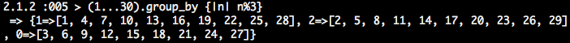
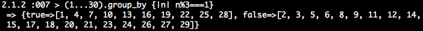

The Ruby group_by method
When starting out with Ruby, the most intuitive way to create a hash is by spelling out key-value pairs, so something like coolHash={ 1 => 4, 2 => 5, 3 => 6} . This can be slow and boring, so in many cases a loop is a better approach. For example, for n in 1...9 do coolHash[n]=n+3 end hashes out the same pattern, but for even more integers. Shockingly, there are some cases where there is an even better method, and that method is group_by .
We can see how it works with an example.
Let's say you have an array of integers 1 through 29 and you want to split them into groups depending on their remainder when divided by 3. The method group_by can do this beautifully with a hash, with the key being the remainder, and the value being an array of all the integers that have that remainder. Since there are only 3 possible remainders (0, 1 or 2), there should only be 3 items in the hash, so check it out:
As you can see, in one short line of code, we produced the output as described. Our method is plugging each item of the original array into the condition and then grouping those items by the result of the condition. Similarly, if we want to see whether the integer has remainder 1, we can change |n| n%3 to |n| n%3===1, as below:
Unsurprisingly, the result has two items, true and false, because an integer is either has remainder 1 or it doesn't.
It's not difficult to think of more examples where group_by could be useful. Maybe you have a set of user birthdays and want to group them by year, or year-month. This is effortless with group_by. Or maybe you just wrote a method manipulates a string, but you aren't sure how it will handle each case, or if it ever errors. Now, with one line of code, (something like arr.group_by {|n| manipulator(n)} ) you can start with an array containing all the strings in question, and end up with a cleanly organized hash of how the method operated on each string. Whatever the scenario, group_by can assist you, and if it can't, try to throw it in there anyways because it's so fun to use.